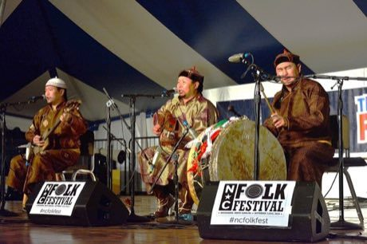

Home / Classical Worlds / Steppe and Arctic
Playable heritage gameTuvan Throat Singing
Also known as Khoomei · Хоомей
One singer, two sounds at once: a low steady hum in the chest and, above it, a clear whistle-like melody picked from the hum's overtones by shaping the mouth. A heritage of Tuvan herding families.


How to play
- Listen to the low drone. It is one held pitch and it never stops.
- A frame closes around the overtone to sing next. Each band of the ladder is one natural overtone of the drone.
- Sing that overtone on the beat: a glowing lens slides up and down the ladder to the band you choose.
- Follow the melody to the end of the figure. Steady timing earns the score; stray extra notes cost points.
Rules at a glance
- The drone (the fundamental) is held constant from the last half beat of the count-in to the end of the piece.
- Five overtones of the drone are available: the 6th, 8th, 9th, 10th and 12th harmonics, from low to high.
- Only one overtone sounds at a time; a new note ends the previous one.
- A note scores when it is sung close to its beat; the timing window is generous at the start and tightens with practice.
- Notes between the beats of the melody cost points.
- Watch and learn plays the melody for you first; you can pause it and follow along.
About the tradition
Khoomei is a living vocal art of the Tuvan people of southern Siberia and of neighbouring Mongolia, practised by herders for imitating wind, water and echoing hills. The voice in this game is our own synthesis, not a recording of any singer.
Origins
Usually placed in the era of Classical Worlds (about 1000 BCE to 500 CE), although its exact origins are uncertain, within the cultural world of Steppe and Arctic.
Credits
- Photo: AjarnRichard, CC BY-SA 4.0, source on Wikimedia Commons
- Text: CC BY-SA 4.0, World Heritage Games.
Sources

Get the app
Tuvan Throat Singing is one of 9 instruments and voices in the Wind & Voice of the World app for Android. Submitted to Google Play; in review. Store links appear here the day it goes live. One app, many traditions, no account needed.
More games to play


Wayang Shadow Puppets
Indonesia · Performance and storytellingPlay preview · in the Story & Theatre of the World app

Water puppet pond theatre
Vietnam · Performance and storytellingPlay preview · in the Story & Theatre of the World app
More from Mongolia

Bökh
Mongolia · Wrestling and martial sports
Ger raising
Mongolia · Puzzles and mind games

Mongol bichig
Mongolia · Crafts and making
Mongolian Bow Archery
Mongolia · Dexterity and skill games
Mongolian chess
Mongolia · Board and table games